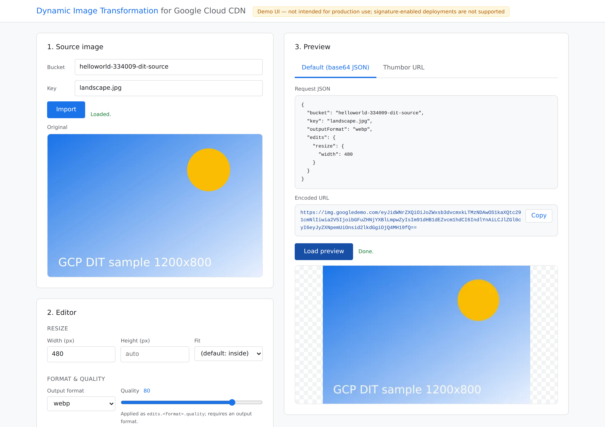

One URL, every image you need
Dynamic Image Transformation for Google Cloud CDN
Store one original · describe what you want in the URL · served worldwide from edge cache
img.googledemo.com — every example in this deck was generated live by that service
Images: the chore every app is stuck with
One image, N sizes
Phone / tablet / desktop / thumbnails / retina — a single product photo easily needs a dozen renditions
Pre-generating = storage explosion
Cutting every size ahead of time multiplies storage, and one design tweak means re-processing the entire catalog
New formats lag behind
WebP saves 25–35% bandwidth, AVIF even more — but batch-converting years of images is the project nobody wants
None of this should be a human's job.
The fix: stop generating images — describe themThe URL is the API
① Store one original
Put the highest-quality image in Cloud Storage. That's all you manage.
② Describe in the URL
Your frontend / app spells out size, crop, format, watermark — the first request renders it on the fly
③ Cached at the edge
Every later request for the same URL is served by the nearest CDN edge — no recomputation
One original, any variationEvery image below is a real, live-generated output of the service
AI inside: the service “sees” your imagesPowered by Cloud Vision — the counterpart of AWS Rekognition
Faces are detected and centered automatically — no more hand-cropping product heroes, member avatars or contact thumbnails.
The same pipeline also does content moderation (SafeSearch) to block inappropriate uploads.
Try it right now: the visual playgroundLive demo — tune parameters, preview instantly

Scan to open on your phone
Open Live DemoImport an image → drag the knobs → live preview,
with copy-paste-ready request JSON and encoded URL
Architecture: four managed services, zero opsNothing to patch, nothing to scale

Already on AWS? Move with zero changesCounterpart of “Dynamic Image Transformation for Amazon CloudFront”

Cost: pay for what you use — tiny at small scaleEstimates from public list prices (asia-southeast1); verify with the pricing calculator
| Scale | Image requests / month | Estimated monthly cost | That is… |
|---|---|---|---|
| Startup / small app | 10 M | ≈ $70 – 95 | ≈ $8 per million images |
| Growing e-commerce / media | 125 M | ≈ $660 – 970 | ≈ $6 per million images |
| Large platform | 500 M | ≈ $2,600 – 3,800 | ≈ $6 per million images |
Round table: what would you move first?
Three questions to take into the discussion:
1️⃣ How are image renditions produced today — and what do they cost in storage and people?
2️⃣ Which scenario would you automate first — product images, avatars, UGC moderation?
3️⃣ If you run the AWS solution today, would you try a zero-change migration rehearsal?